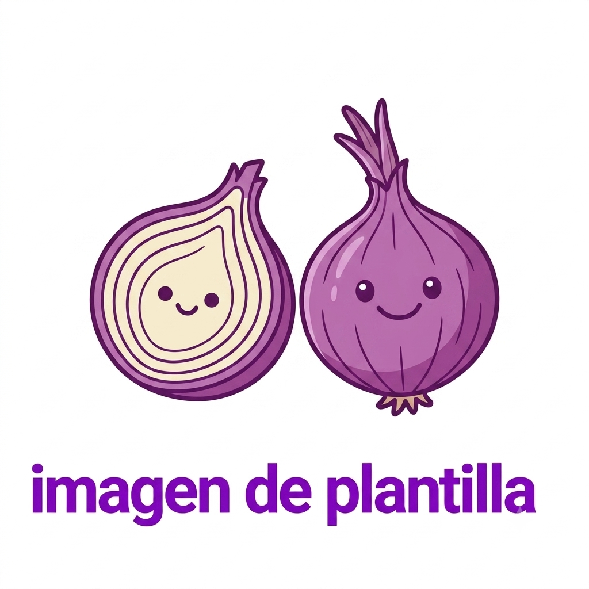

CSGI DATABASE
ARCHIVO #AQ-002

🟢 ACTIVO
Clasificación:
OMEGA
Afiliación:
Redwood Sprout
Nombre:
Aquanox Ardentius
Especie:
Maurin
Edad:
19 años
Nombre clave:
Rojo
Control térmico
Manipulación del fuego
Alteración climática
Aquanox Ardentius es una entidad capaz de controlar la temperatura y diferentes manifestaciones del fuego. A pesar de su corta edad, posee un potencial clasificado como Omega, convirtiéndose en una de las fuerzas más peligrosas dentro de Redwood Sprout. Su poder representa la unión entre destrucción y control energético.
🌱 Redwood Sprout
🌡 Energía térmica
⚔ Convergence Reality
🔥 Entidades Omega